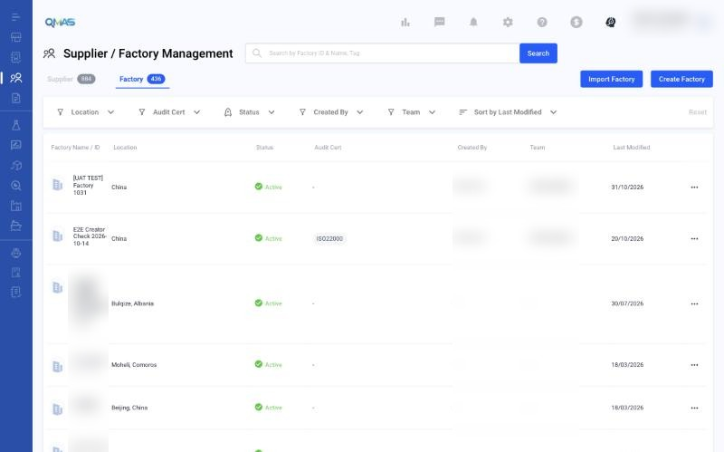
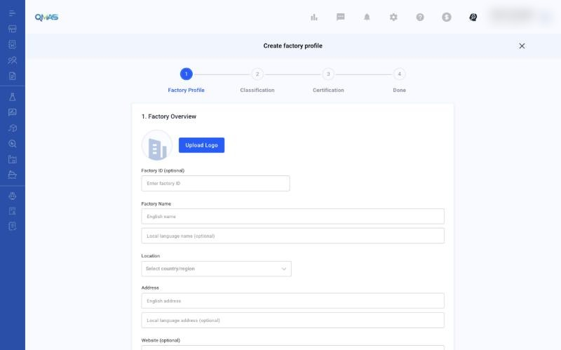
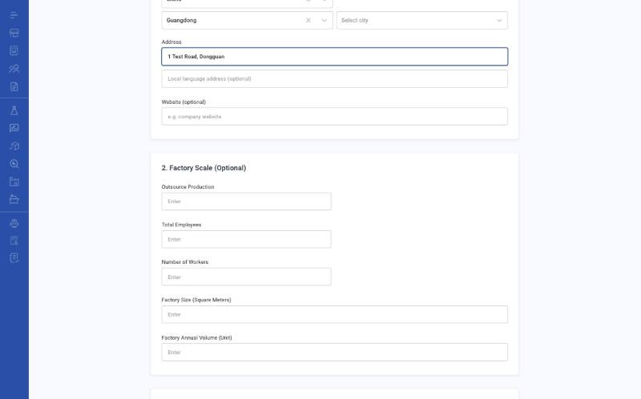
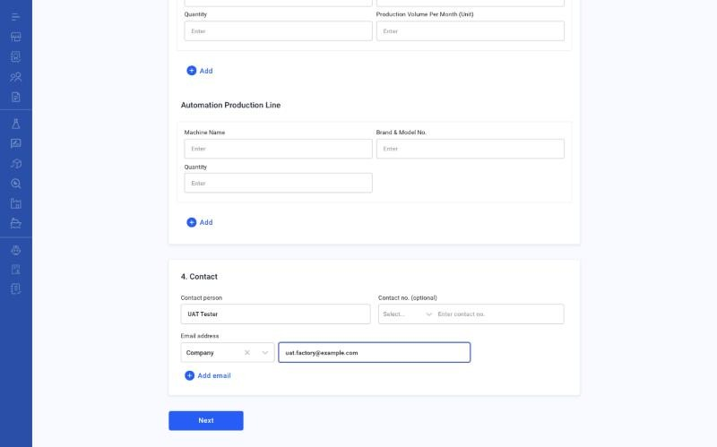
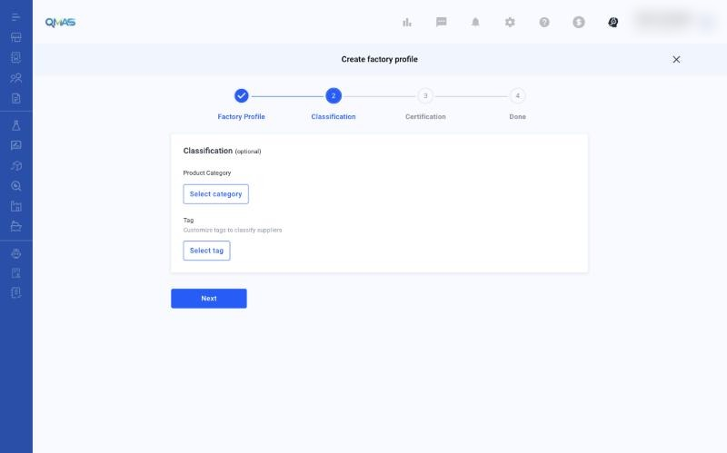
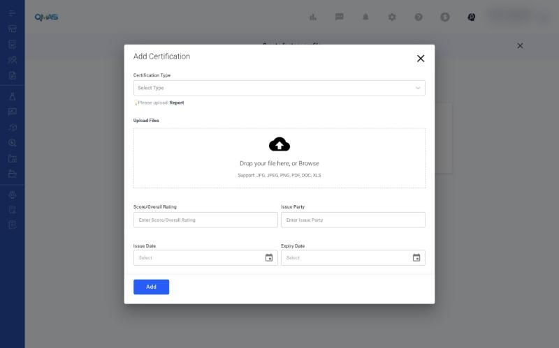
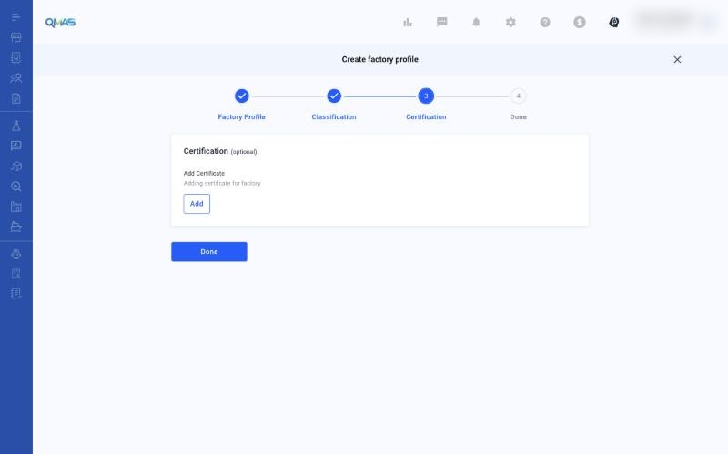
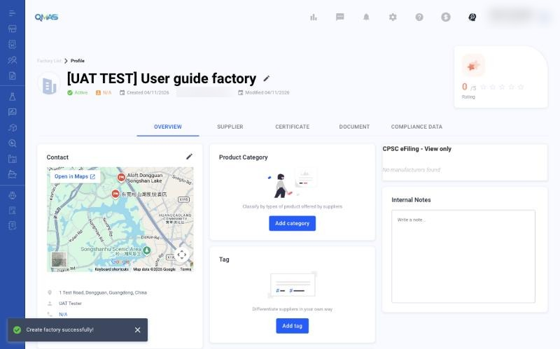

Factory Management — Create a Factory
Add a factory profile with its location, scale, equipment and certificates, so you can link it to suppliers, products and inspections.
Overview
- Open Supplier / Factory Management, click the Factory tab, then Create Factory.
- Factory Profile: overview, scale, equipment and contact.
- Classification (optional): product category and tags.
- Certification (optional): add audit reports or certificates, then click Done.
- The factory profile opens.
Step-by-step
1. Open the Factory tab
In the left menu, open Supplier / Factory Management and click the Factory tab. It lists your factories with location, status and audit certificates.
Click Create Factory, or Import Factory to add many factories from a file.

2. Factory Profile — overview
- Upload Logo and Factory ID (optional).
- Factory Name: English name (required) and local-language name (optional).
- Location: country or region, then province and city.
- Address: English address (required) and local-language address (optional).
- Website (optional).

3. Factory Profile — scale and equipment (optional)
Factory Scale: outsource production, total employees, number of workers, factory size (square meters) and annual volume.
The equipment section lists machines and Automation Production Line entries: machine name, brand and model no., quantity and monthly production volume. Click Add for more rows.

4. Factory Profile — contact
Under 4. Contact, fill in the Contact person and an Email address with its type (Company, QA, Sales or Other). Contact no. is optional. Click Next.

5. Classification (optional)
Click Select category for the product categories this factory makes, and Select tag for your own tags. Click Next.

6. Certification (optional)
Click Add to attach an audit report or certificate. In Add Certification, choose the certification type, upload the file (JPG, JPEG, PNG, PDF, DOC or XLS), and fill in the score or overall rating, issue party, issue date and expiry date. Click Add.

Click Done to create the factory.

7. Done — factory profile
QMAS shows “Create factory successfully!” and opens the factory profile. Use the tabs Overview, Supplier, Certificate, Document and Compliance Data to manage what is linked to this factory.

Tips
FAQ
- How do I create a new factory?
- Go to Supplier / Factory Management, click the Factory tab, then Create Factory. Fill in Factory Profile, then Next, Next and Done. Direct link: https://qmas.icw.io/supplier-manager/factory/create
- Can I add many factories at once?
- Yes. Click Import Factory on the Factory tab.
- Where do I upload a factory audit certificate?
- In step 3 Certification of Create Factory, or later from the Certificate tab of the factory profile.